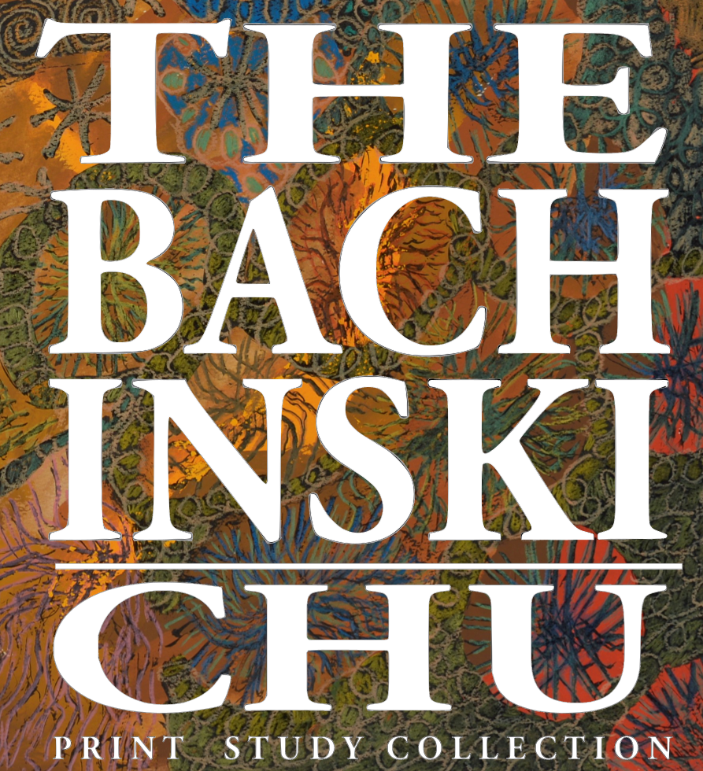
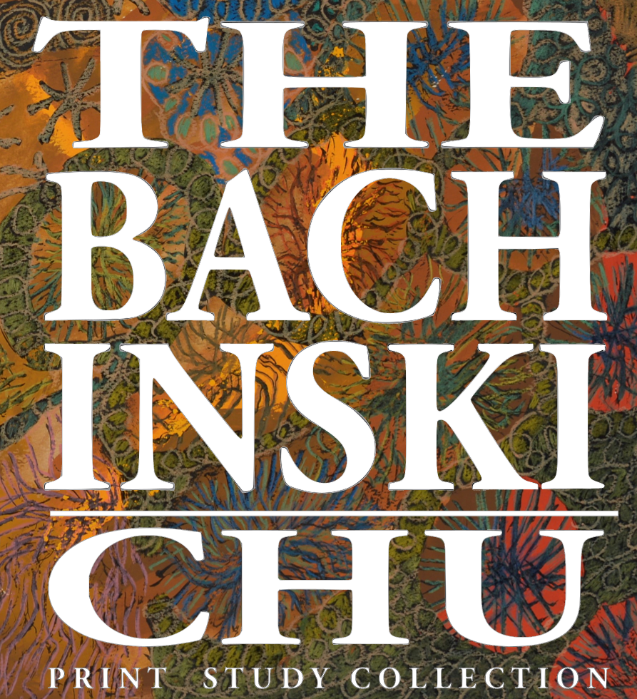

The Bachinski/Chu Print Study Collection (B/Chu) is a remarkable student-initiated, student-supported, student-run, and student-focused resource containing over 2,200 fine art prints spaning the technological and aesthetic developments of fine art printmaking from the sixteenth century to today.
Founded in 1968 and named for retired School of Fine Art and Music faculty Professors Walter Bachinski and Gene Chu, this dynamic art centre provides opportunities for students to examine closely examples of historic and contemporary fine art prints and develop a professional curatorial skills including collections management, exhibition design, museum education, fundraising for the arts, and community outreach and event planning, more broadly.
Primarily funded with proceeds of the biannual fall and winter SOFAM Student Print Show and Sale as well as cash and 'in-kind' donations from members of our community, the B/Chu has contributed to award-winning exhibitions, hosted quality experiential learning opportunities, created exciting research collaborations, and stimulating community events.
A conversation with Art Historian Christina Smylitopoulos about what a Bachinski-Chu is (or does).
Listen Now! 
